Meloul Html 1.0 Template
Documentation 1.0
- Created: 04/09/2013
- By: Templaza
- Email: info@templaza.com
Thank you for purchasing my theme. If you have any questions that are beyond the scope of this help file, please feel free to post it on out forum here. Thanks so much!
This documentation was made only with the Documenter (except the images)
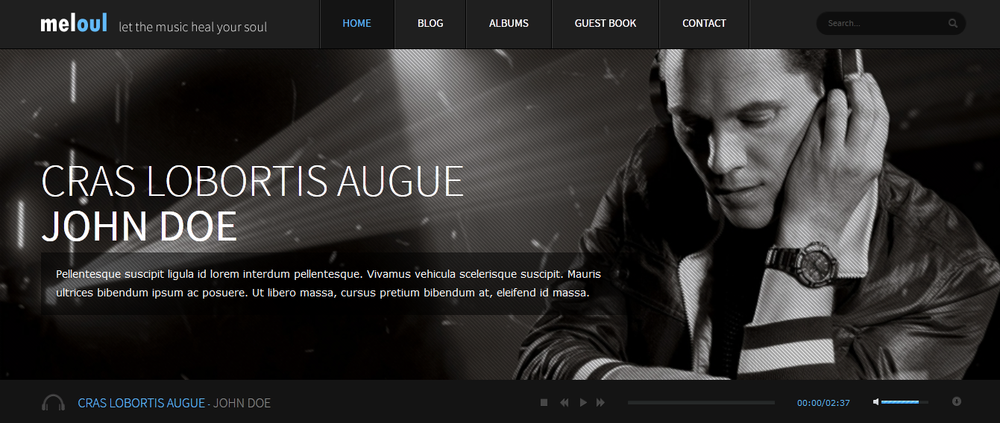
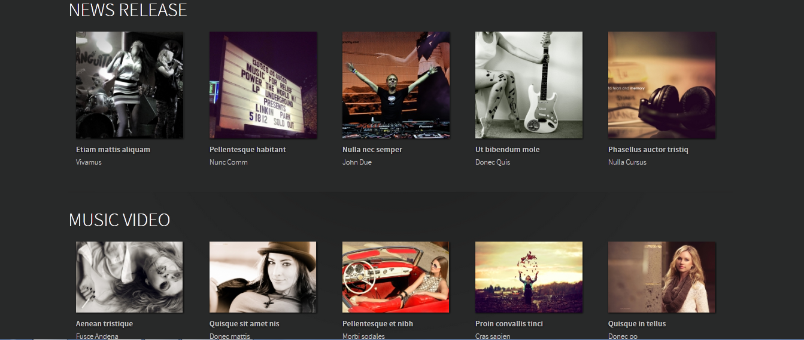
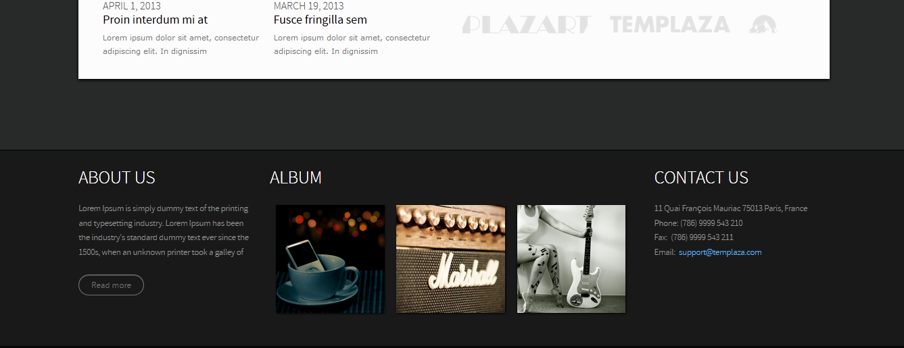
HTML file
Meloul:
- Index.html --> Home page
Meloul/Pages:
- blog.html
- blog-timeline.html
- typography.html
- user-page.html
- tag-page.html
- albums.html
- album-page.html
- album-video.html
- album-list.html
- guest-book.html
- contact.html
- feature-music.html
- search.html
Meloul/Pages/Albums:
- item-album-page.html
- item-album-video.html
Meloul/Pages/blog:
- item-single-blog.html
Javascript
- Home page:
- We use jquery jplayer.playlist to play music.
-
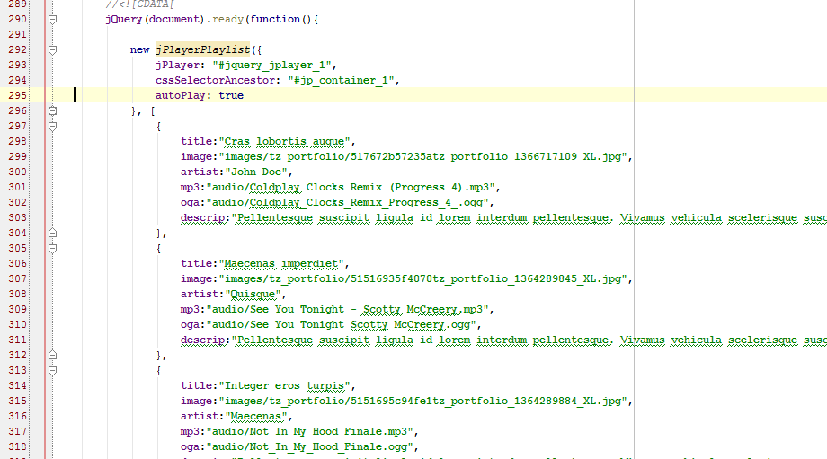
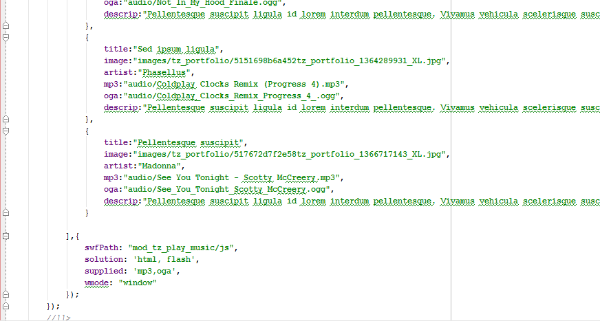
- Blog page:
- We use jquery isotope to filter and load ajax for blog page.
-
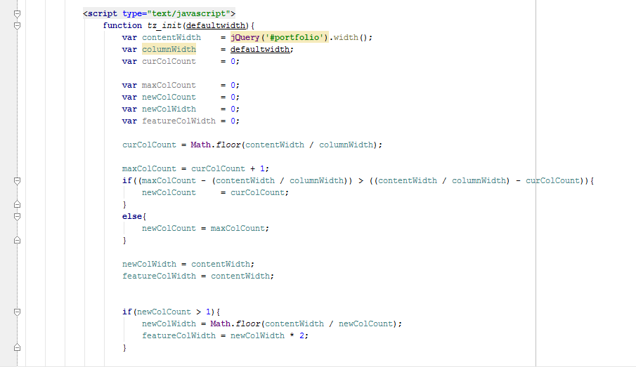
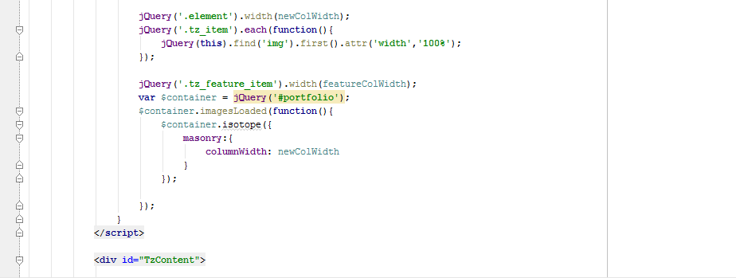
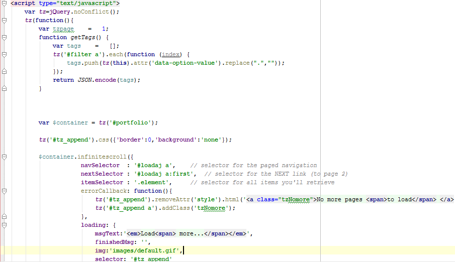
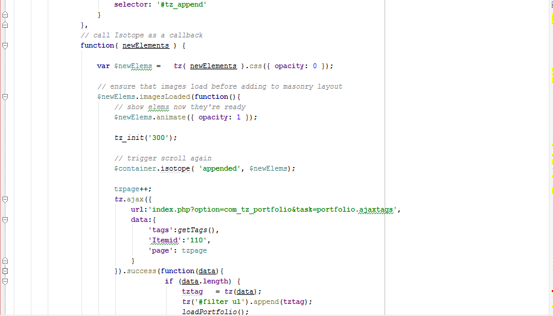
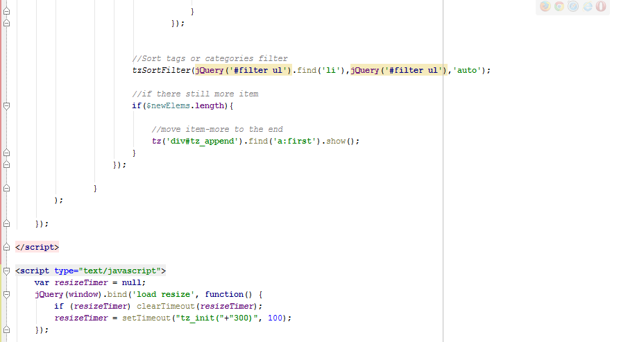
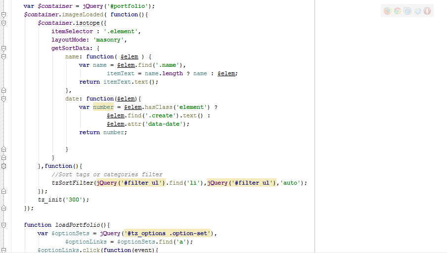
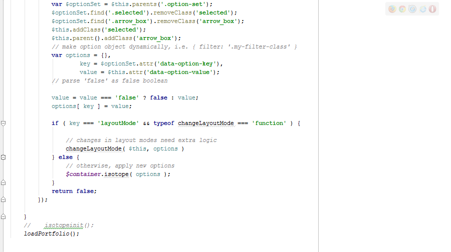
- Javascript
Foder js
- bootstrap.min
- caption
- core
- html5
- html5.min
- idangerous.swiper
- jplayer.playlist
- jplayer.playlist2
- jplayer.playlist3
- jquery.backgroundSize
- jquery.infinitescroll.min
- jquery.infinitescroll.min.min
- jquery.isotope.min
- jquery.jplayer
- jquery.jplayer.min
- jquery.jplayer2
- jquery.jplayer3
- jquery.masonry.min
- jquery.min
- jquery-noconflict
- mootools-core
- page
- PIE
- pinit
- selectivizr
- tz.menu
- tz_portfolio
- tz_portfolio.min
- widget
- add
- add1
- guest-book
- home
- itemaudio
- itemaudio1
- itemvideo
- jPlayerBlogPlaylistaudio
- jPlayerBlogPlaylistvideo
- jPlayerPlay
- jPlayerPlaylist
- jPlayerPlaylist1
- tz-loadblog
- tz-loadtimeline
- circle.player
- jplayer.playlist.min
- jquery.grab
- jquery.jplayer.inspector
- jquery.jplayer.min
- jquery.transform2d
- mod.csstransforms.min
- popcorn.jplayer
- popcorn
- popcorn.player
- popcorn.subtitle
CSS Files and structure
We separated css file to make this template user friendly. We have several main css file :
Folder css:
- template.css --> Stores CSS for main div layout
- bootstrap.css
- bootstrap-responsive.css
- idangerous.swiper.css
- mod_tz_portfolio_categories.css
- mod_tz_guestbook.css
- jplayer.blue.flag.css
- baiviet.css
- ie7.css
- ie8.css
- ie9.css
- isotope.css
- jplayer.pink.flag.css
- mod_tz_news.css
- tzportfolio.css
- add.css
- home.css